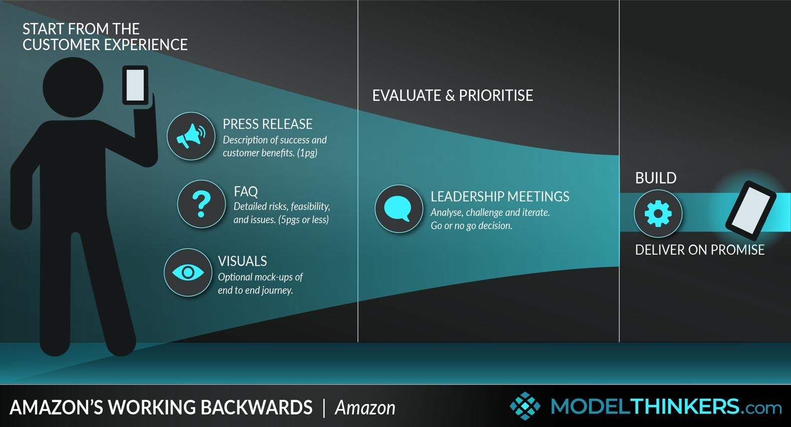

Chapter overview
Imagine you've been assigned to a customer that wants an AI-powered analytics dashboard.
Their CTO wants real-time data. Their operations team wants faster reporting. Their engineering team says the data pipelines are unreliable.
You have six weeks to deliver a solution.
As a software engineer, you might begin by evaluating streaming architectures, choosing a database, and designing APIs.
As an FDE, your first responsibility is different:
Determine which customer problem is worth solving, what success looks like, and what the simplest credible path to that outcome is.
The difference isn't technical competence. Both roles require strong engineering skills. The difference is how you frame the work, manage uncertainty, and make decisions.
This chapter teaches that mindset.
Learning objectives
By the end of this chapter, learners should be able to:
Distinguish solution-first thinking from outcome-first thinking.
Investigate assumptions instead of accepting customer requests at face value.
Prioritize work using business value, effort, risk, and uncertainty.
Make defensible engineering trade-offs under delivery pressure.
Communicate recommendations without overstating confidence.
Recognize when to push back, escalate, prototype, or stop.
4.1 The fundamental shift: From implementation to outcomes
Consider two ways of framing the same customer request.
Implementation-first
"The customer asked for a dashboard. What technologies should we use to build it?"
Starts with the requested solution.
Outcome-first
"What decision does the customer need to make faster, and what information is missing?"
Starts with the underlying problem.
Suppose discovery reveals that the operations team doesn't actually need real-time streaming. They need a reliable report every morning before their 9 AM planning meeting.
A nightly batch pipeline might solve the problem with less complexity, lower cost, and fewer operational dependencies.
The customer asked for real-time analytics. Their actual need was timely, trustworthy information.
This illustrates a central FDE principle:
Treat the customer's proposed solution as a hypothesis, not automatically as the requirement.
That doesn't mean ignoring the customer. It means respecting their goal enough to investigate the best way to achieve it.
4.2 Five mental models for FDE decision-making
1. Outcome over output
Delivering ten features is less meaningful than delivering one feature that substantially improves the customer's workflow.
Ask: What measurable change will occur because this exists?
2. Evidence over assumptions
Don't confuse a stakeholder's confidence with verified evidence.
Ask: What do we know, what do we believe, and how can we test the difference?
3. Trade-offs over perfection
Every technical decision involves constraints: delivery time, maintainability, cost, security, and customer experience.
Ask: Which trade-offs are acceptable, and who has authority to accept them?
4. Ownership without overpromising
Taking responsibility means surfacing problems early, coordinating decisions, and following through—not pretending every obstacle is solvable within the original timeline.
Ask: What can we responsibly commit to?
5. Reusability over endless customization
A customer-specific implementation should ideally teach the product organization something reusable.
Ask: Is this a unique requirement, a configuration problem, or evidence of a missing product capability?
These mental models are complementary. Outcome orientation without technical rigor can lead to fragile implementations. Technical rigor without customer understanding can produce excellent systems that solve the wrong problem.
4.3 Distinguishing problems, requests, and constraints
One of the most useful habits for an FDE is separating what a customer says into different categories.
Consider:
"Our support agents take too long to resolve tickets. We need an AI chatbot integrated with Salesforce, and it must be ready in four weeks."
There are several distinct statements here.
Category | Example | How to respond |
|---|---|---|
Problem | Ticket resolution is slow | Investigate the workflow and baseline |
Proposed solution | AI chatbot | Test whether it addresses the bottleneck |
Integration requirement | Salesforce | Determine which data and actions are necessary |
Constraint | Four-week deadline | Clarify scope and feasibility |
Success criterion | Not yet defined | Agree on measurable improvement |
The most important missing piece is a measurable outcome.
Does the customer want to reduce average handling time? Increase first-contact resolution? Improve response quality? Reduce agent workload?
Different outcomes may require different solutions.
The five-whys technique
The five whys is a root-cause analysis technique that repeatedly asks why a problem occurs.
For example:
Why are support tickets slow?
- Agents spend too long finding answers.
- Answers are spread across several knowledge systems.
- Search results are inconsistent and outdated.
- Documentation ownership is unclear.
- There is no reliable process for reviewing and updating support knowledge.
Illustrative investigation, not a verified diagnosis.
A chatbot might improve access to information, but it won't automatically repair outdated documentation.
A stronger solution could combine content governance, better search, and an AI-assisted interface.
The five-whys method is useful for generating hypotheses, but it should not be treated as proof of causation. Validate conclusions using actual workflow evidence, system data, and stakeholder interviews.
4.4 Prioritizing work when everything is urgent
Customers frequently describe every requirement as critical.
An FDE needs a way to distinguish important work from merely requested work.
A practical framework evaluates four factors:
Impact: How much customer value could this deliver?
Confidence: How strong is the evidence that it will work?
Effort: How expensive or time-consuming is implementation?
Risk: What could go wrong, and how severe would the consequences be?
A simple heuristic is:
This resembles the widely used ICE prioritization framework. It is a decision aid, not a scientifically validated measure of business value.
Risk should also be evaluated separately, because a high score must not override security, compliance, or safety requirements.
Interactive prioritization exercise
Suppose a customer requests four features for a new analytics platform.
Adjust the estimated impact, confidence, and effort to see how priorities change.
Feature prioritization lab
Illustrative scores
#1
Daily automated report
Impact 8 · Confidence 9 · Effort 2
36.0
#2
Data quality alerts
Impact 9 · Confidence 8 · Effort 4
18.0
#3
Custom executive UI
Impact 5 · Confidence 6 · Effort 6
5.0
#4
Real-time dashboard
Impact 7 · Confidence 5 · Effort 8
4.4
Notice how a relatively simple automated report can rank above a complex real-time dashboard.
But don't blindly follow the score. If the dashboard is required for a safety-critical operational decision, that changes the decision entirely.
Good prioritization combines structured reasoning with context and judgment.
4.5 Making decisions under uncertainty
In an FDE engagement, you rarely have perfect information.
The customer may not know their exact data volumes. Their documentation may be outdated. Their stakeholders may disagree about priorities. A critical API may behave differently from its specification.
The goal isn't to eliminate uncertainty before doing anything. It's to identify which uncertainties matter and reduce them in the right order.
The assumption register
An assumption register is a lightweight way to track important unknowns.
Assumption | Impact if wrong | Validation |
|---|---|---|
Customer API supports required data | High | Integration spike |
Daily reporting is sufficient | High | User interviews |
95% extraction accuracy is achievable | High | Representative evaluation |
Existing authentication can be reused | Medium–High | Security review |
Dashboard can support 500 users | Medium | Load testing |
The most useful validation activity is often the one that prevents the largest amount of wasted work.
Reversible vs. difficult-to-reverse decisions
Not every decision deserves the same amount of analysis.
Choosing the wording of a dashboard label is easy to reverse.
Choosing a data residency architecture for a regulated customer may be difficult and expensive to reverse.
A useful rule is to move quickly on low-risk, reversible decisions while applying stronger evidence, review, and stakeholder approval to consequential decisions.
This is not an excuse to bypass engineering review. It's a way to focus review effort where it matters.
4.6 Technical excellence vs. business pragmatism
Consider a customer that needs an integration between Salesforce and an internal order management system.
You have three possible approaches.
Option A — Build a custom integration service
Full control over logic and performance, but higher implementation and maintenance effort.
Option B — Use an existing integration platform
Faster if the required connectors and transformations are supported, but introduces platform cost and constraints.
Option C — Use scheduled batch synchronization
Simpler operationally, but unsuitable if the workflow genuinely requires immediate updates.
There is no universally correct answer.
An FDE should compare the approaches against the customer's actual requirements.
For example, if orders only need to synchronize every hour, batch synchronization may be sufficient. If inventory availability must be accurate during checkout, delayed synchronization could be unacceptable.
Beware of overengineering
Martin Fowler's explanation of YAGNI—You Aren't Gonna Need It—argues against implementing speculative functionality before there is a real need.
For FDEs, this principle is especially relevant because delivery timelines are often tight and customer-specific requirements can tempt engineers into building elaborate frameworks.
However, YAGNI does not justify ignoring security, testing, maintainability, or foreseeable operational needs.
A useful distinction is:
Avoid speculative features. Do not avoid necessary engineering safeguards.
Reliability is a business trade-off too
Google's Site Reliability Engineering guidance uses error budgets to balance service reliability and the pace of changes. The concept illustrates how engineering decisions can be connected to explicit service objectives instead of subjective arguments.
An FDE should similarly make performance, reliability, and delivery trade-offs visible to the customer rather than treating them as purely internal engineering concerns.
4.7 Communicating difficult decisions
An FDE frequently needs to communicate bad news.
Perhaps the prototype failed to meet its accuracy target. Perhaps an integration is more complex than expected. Perhaps the customer's requested deadline is unrealistic.
The quality of the communication matters.
Weak communication
"The API doesn't work, so we're blocked."
This describes a symptom without helping the customer understand the impact or available decisions.
Strong communication
"The customer API currently returns incomplete order data, which prevents us from validating the reconciliation workflow. We've isolated the missing fields and identified two options: request an API enhancement or use the approved batch export as an interim source. The first option preserves real-time updates but has an uncertain timeline. The second could support the pilot, subject to data validation. We recommend testing the batch approach while the API owner investigates."
The second response explains the issue, its consequence, the options, and the recommendation.
A reusable FDE communication framework
1
Situation
What has happened?
2
Impact
Why does it matter to the customer?
3
Options
What realistic choices are available?
4
Recommendation
What should we do, and why?
5
Decision / Next step
Who needs to act, and by when?
This structure is useful in customer emails, steering committee updates, incident discussions, and technical design reviews.
It also prevents a common failure mode: communicating activity instead of progress.
"We completed eight tickets" is an activity update.
"We validated the data pipeline and removed the main blocker to the pilot" is a progress update.
4.8 Knowing when to push back
Being customer-facing does not mean agreeing with every customer request.
An FDE should challenge requests when they create unnecessary complexity, contradict the customer's goals, or introduce unacceptable risk.
The key is to challenge the approach without dismissing the underlying need.
Consider three situations.
Scenario A — The customer wants Kubernetes
The application serves 30 internal users, has modest traffic, and can run on an approved managed application platform.
A useful response is to understand the operational requirements driving Kubernetes before accepting its complexity. The customer may have valid platform standards that change the recommendation.
Scenario B — The customer wants to skip security review
Leadership wants to accelerate deployment by bypassing required security approval.
The FDE should not treat mandatory controls as negotiable. They can help identify parallel work or an approved test environment, but production rollout must respect the customer's authorization process.
Scenario C — The customer wants every feature in the MVP
The proposed scope includes reporting, notifications, forecasting, custom dashboards, and automated decision-making.
The FDE should identify the smallest workflow that delivers measurable value and propose staged delivery with explicit dependencies and acceptance criteria.
An effective FDE isn't someone who says yes to everything.
It's someone who helps the customer make better decisions while preserving trust.
4.9 Working backwards from customer value
One useful approach comes from Amazon's Working Backwards method.
Rather than starting with technology, teams articulate the intended customer experience and benefits before implementation. Amazon describes using a press release and FAQ to clarify the problem, value proposition, and important questions.
FDEs can adapt this into a short customer outcome statement.
For example:
Customer: Regional logistics company
Problem: Dispatchers spend two hours every morning manually reconciling shipment exceptions.
Desired outcome: Reduce reconciliation time to 30 minutes while maintaining accurate exception handling.
Initial solution hypothesis: Automated exception detection and a prioritized review queue.
Success measurement: Time spent per shift, missed exceptions, and dispatcher adoption.
Key constraints: Existing ERP integration, data access controls, and a six-week pilot.
Notice that the technology stack is absent.
That's intentional.
Architecture comes after the team understands the desired outcome and constraints.
4.10 Recommended learning resources
These resources have been checked against their publisher or original video pages. They focus on customer-centered thinking, prioritization, engineering simplicity, and technical trade-offs.

WATCH · REQUIRED · CONFERENCE TALK
Working Backwards: Amazon's Approach to Innovation
AWS re:Invent · AWS Events
Learn how to define the customer benefit before committing to a technical solution. Focus on the customer questions and PR/FAQ methodology.

WATCH · OPTIONAL REVIEW · 31 MIN
Y Combinator · Eric Migicovsky
Revisit the segment from 02:43 to 14:16. Pay particular attention to asking about actual past behavior rather than hypothetical future preferences.
READ · REQUIRED · ENGINEERING ARTICLE
Explore why building speculative capabilities creates unnecessary complexity, and how incremental design changes engineering decisions.
READ · REQUIRED · PRODUCT STRATEGY
Product Management at Amazon: Working Backwards
Understand how teams articulate the customer's problem and expected benefit before designing the implementation.
READ · OPTIONAL · ENGINEERING TRADE-OFFS
Google SRE: Error Budget Policy
Learn how reliability objectives can inform decisions about release velocity and operational risk.
4.11 Practical exercise — Make the recommendation
Exercise 4.1
Scenario: The real-time analytics request
A retail customer wants a real-time inventory dashboard. They currently receive inventory updates every 24 hours.
After discovery, you learn that:
Store managers make replenishment decisions once each morning.
The inventory system can export reliable data every hour.
A real-time event streaming integration would take approximately 10 weeks.
A scheduled hourly pipeline could be delivered in three weeks.
The customer wants to demonstrate business value within four weeks.
Some high-demand products sell out unexpectedly, but the customer hasn't quantified how frequently this occurs.
The CTO insists that real-time streaming is the only acceptable solution.
Your task: Recommend a delivery approach. Explain how you would address the CTO's concern, what you would validate, and what you would measure.
Auto-saved on this device. Review your answer for customer impact, evidence, assumptions, ownership, and a clear next step.
Example FDE recommendation
I recommend validating the hourly pipeline as the first delivery option while investigating whether certain inventory decisions genuinely require real-time data.
The current evidence suggests that most replenishment decisions occur daily, so an hourly feed may substantially improve data freshness within the four-week timeline.
However, high-demand product stockouts could justify lower-latency updates for a subset of inventory events. I would investigate stockout frequency, financial impact, and the operational decisions affected.
For the pilot, I would propose an hourly pipeline with freshness monitoring and measure reporting accuracy, decision timeliness, and operational improvements.
I would present real-time streaming as a potential second phase if the evidence demonstrates that hourly updates cannot meet the customer's requirements.
The CTO should approve the revised pilot scope and explicitly accept the limitations of hourly synchronization.
4.12 Decision-making simulation
In this exercise, there isn't always one perfect answer. The objective is to recognize the trade-offs.
FDE judgment lab
1 of 3
The deadline dilemma
A customer wants a production AI workflow in two weeks. Security approval is pending, and testing is incomplete.Commit to the date and work overtime
Propose a limited, approved demonstration while completing security and testing
This creates a potential path to show progress without misrepresenting production readiness. Confirm the demo environment is authorized.
Recommended approach under these assumptions
Refuse to discuss delivery until every approval is complete
FDE judgment lab
2 of 3
The customization dilemma
A customer requests a custom reporting engine, but the product already has configurable reporting capabilities.Build the custom engine immediately
Reject the requirement because reporting already exists
Map the requirement to existing features, identify gaps, and build only where justified
This tests the actual gap and preserves the option to extend the solution where necessary.
Recommended approach under these assumptions
FDE judgment lab
3 of 3
The model accuracy dilemma
An AI extraction system achieves 92% accuracy against a required 97% threshold. The customer wants to launch anyway.Launch because 92% is close enough
Analyze error patterns, propose remediation, and obtain a formal go/no-go decision
This makes the quality gap and its implications explicit while supporting informed stakeholder decisions.
Recommended approach under these assumptions
Change the reported metric to show improvement
4.13 Knowledge check
4.14 Chapter summary
The most important lessons from this chapter are:
Start with outcomes, not technology. A customer request is often a hypothesis about how to solve a problem.
Make assumptions visible. Test consequential unknowns before investing heavily in implementation.
Prioritize using evidence and judgment. Value, effort, confidence, and risk all matter.
Make trade-offs explicit. Technical decisions have business consequences.
Communicate with ownership. Explain situations, impacts, options, recommendations, and next steps.
Challenge respectfully. Being customer-focused does not mean agreeing to every request.
Build only what is justified. Prefer simple, maintainable solutions that meet real requirements.
The core principle:
A strong FDE doesn't just ask, "Can we build this?" They ask, "Should we build this, and will it solve the customer's problem?"
UP NEXT · MODULE 1 / CHAPTER 5
A Day in the Life of a Forward Deployed Engineer
We'll follow an FDE through a realistic working week: discovery meetings, coding sessions, customer escalations, architecture reviews, internal product discussions, and executive demonstrations.
We'll also examine how daily responsibilities differ between startup FDEs, enterprise platform FDEs, and AI-focused FDEs.
Field notes
Capture the idea you will use in your next customer conversation.